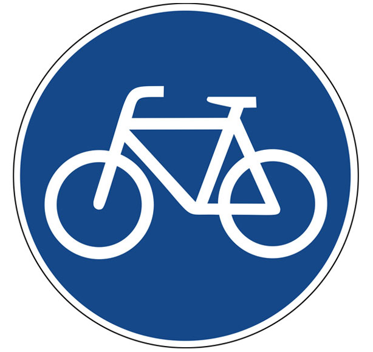
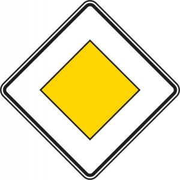
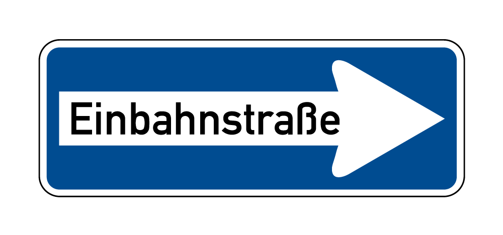

CIEE
Bike Test
You must score 80% on this short quiz to join the CIEE Bike Club and have access to the bikes.
You will also need to agree to the terms and conditions found directly in Question 1.
1. I have read and agree to the terms and conditions found in the
Bike Rental Agreement
and
Equipment Rental Agreement
forms.
I agree to the terms and conditions.
No, I do not agree.
2. If you are biking with a friend in Berlin, are you both required to ride single file?
Depends, as long as passing traffic is not hindered you can ride next to each other.
Yes, cyclists must always ride in single file.
No, cyclists are always allowed to ride next to each other.
3. Are you allowed to use your cellphone while riding a bike in Berlin?
No, using a cellphone while biking is against the law.
Yes, as long as you have one hand on the handlebars.
Depends, you may use your cell phone for navigation purposes but not to talk or text.
4. Are vehicles required to stop when you are crossing a crosswalk?
Depends, vehicles are required to stop only if you dismount your bicycle.
Yes, vehicles are always required to stop for cyclists.
No, vehicles are only required to stop for pedestrians.
5. Several cars are stopped in front of you at a red light. To your right, there is a row of parked cars. In between the stopped cars in front of you and parked cars on your right there is enough room to safely pass proceed to the front of the line. Are you allowed to pass stopped traffic?
Yes, if there is enough room to safely get through cyclists are allowed to pass the stopped cars on the right.
No, cyclists must wait their turn for the light to turn green.
No, cyclists are never allowed to pass traffic on the right.
6. You are riding back to G27 using the street. You see a bike lane emerge on your right. There are no signs around. What are you required to do?
You must use the bike lane.
It is up to you to decide if you want to continue using the street or if you want to merge onto the bike lane.
You may only use the street only if there is something or someone blocking the bike lane.
7. You and 19 other CIEE students are riding together to the lake for the weekend. The first couple of cyclists ahead of you make it through the intersection while the light is still green, but then the light turns red. How should you react?
Keep cycling even though the light is red, but always make sure oncoming traffic remains stopped.
Stop at the light, because running a red in Berlin can result in a hefty fine.
You may only keep cycling if there is no other traffic around.
8. What does this sign mean?

You are required to use the bike lane.
You are recommended to use the bike lane.
There is a lot of bike traffic in this area.
9. What does this sign mean?

You have the right away at the next intersection.
You have the right away on the street.
Caution, you do not have the right away.
10. What does this sign mean?

One way street.
One way street, bikes excluded.
Detour.
11. What is the fundamental rule of the road at intersections where two vehicles, including bikes, encounter each other?
"Right before left" : Drivers and bikers are required to give way to vehicles approaching from the right at intersections.
All interections have signs or lights that indicate which driver/biker has right of way.
CIEE Bikes always have the right of way.
Whoever gets to the intersection first gets to proceed first.
12. How should I lock my bike?
Locking the front tire to the frame is enough.
Lock the frame to a solid object that it cannot be lifted over.
I don't need to lock my bike! Bikes never get stolen in Berlin.